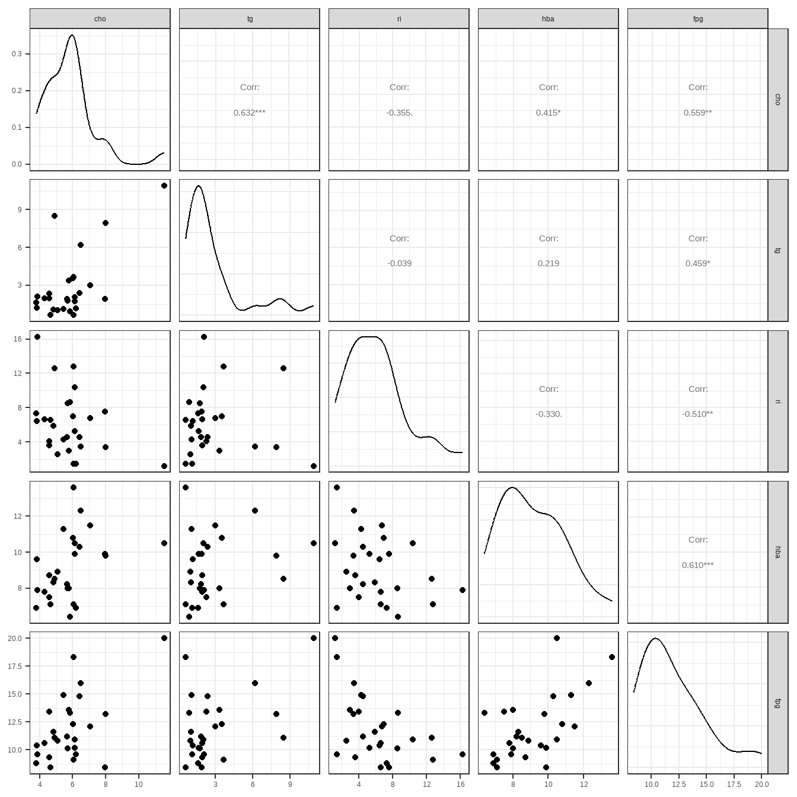
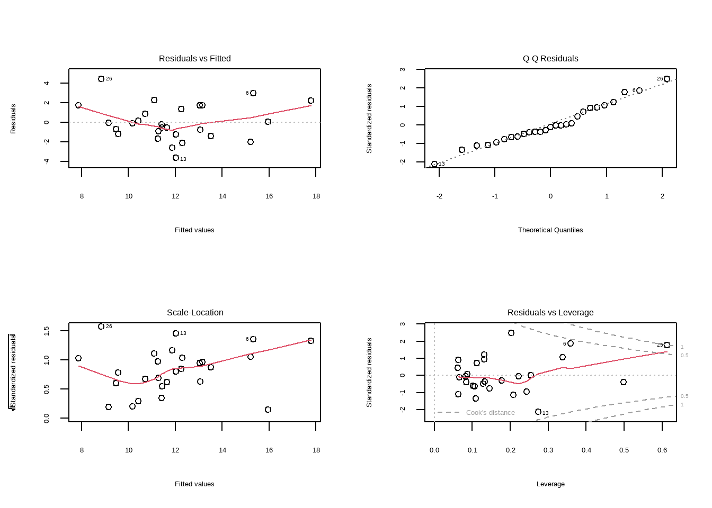
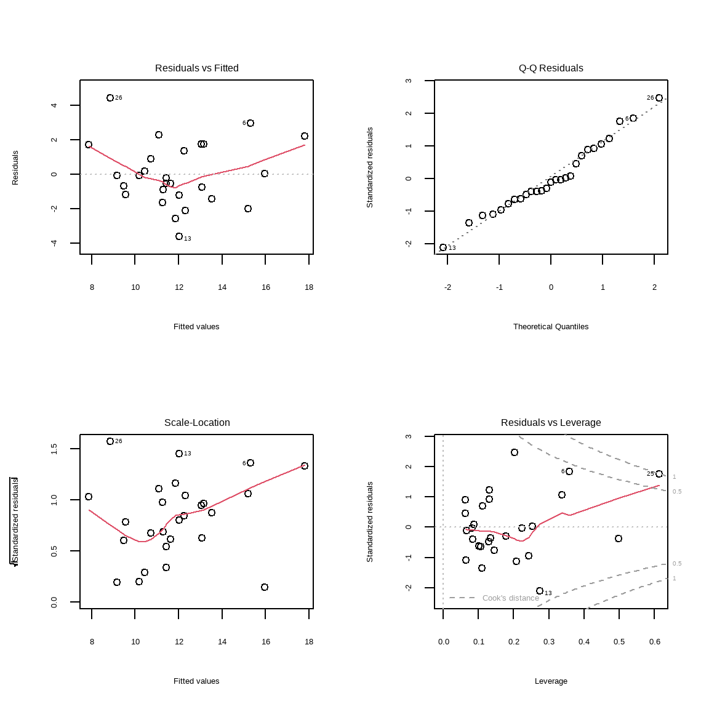
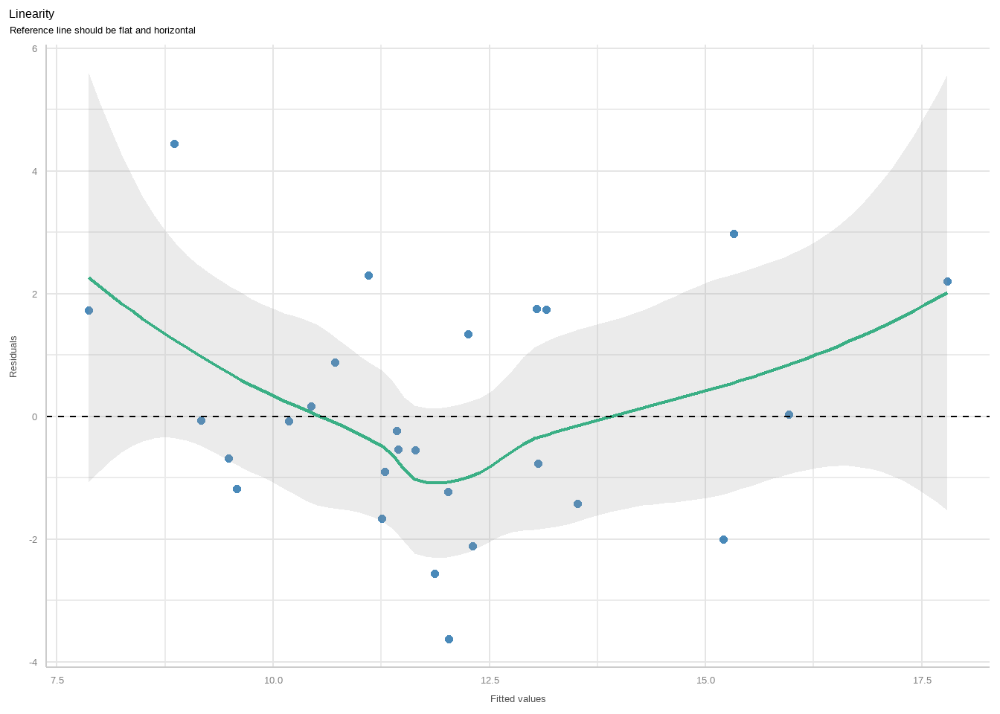

df15_1 <- data.frame(
cho = c(5.68,3.79,6.02,4.85,4.60,6.05,4.90,7.08,3.85,4.65,4.59,4.29,7.97,
6.19,6.13,5.71,6.40,6.06,5.09,6.13,5.78,5.43,6.50,7.98,11.54,5.84,
3.84),
tg = c(1.90,1.64,3.56,1.07,2.32,0.64,8.50,3.00,2.11,0.63,1.97,1.97,1.93,
1.18,2.06,1.78,2.40,3.67,1.03,1.71,3.36,1.13,6.21,7.92,10.89,0.92,
1.20),
ri = c(4.53, 7.32,6.95,5.88,4.05,1.42,12.60,6.75,16.28,6.59,3.61,6.61,7.57,
1.42,10.35,8.53,4.53,12.79,2.53,5.28,2.96,4.31,3.47,3.37,1.20,8.61,
6.45),
hba = c(8.2,6.9,10.8,8.3,7.5,13.6,8.5,11.5,7.9,7.1,8.7,7.8,9.9,6.9,10.5,8.0,
10.3,7.1,8.9,9.9,8.0,11.3,12.3,9.8,10.5,6.4,9.6),
fpg = c(11.2,8.8,12.3,11.6,13.4,18.3,11.1,12.1,9.6,8.4,9.3,10.6,8.4,9.6,10.9,
10.1,14.8,9.1,10.8,10.2,13.6,14.9,16.0,13.2,20.0,13.3,10.4)
)
str(df15_1)
## 'data.frame': 27 obs. of 5 variables:
## $ cho: num 5.68 3.79 6.02 4.85 4.6 6.05 4.9 7.08 3.85 4.65 ...
## $ tg : num 1.9 1.64 3.56 1.07 2.32 0.64 8.5 3 2.11 0.63 ...
## $ ri : num 4.53 7.32 6.95 5.88 4.05 ...
## $ hba: num 8.2 6.9 10.8 8.3 7.5 13.6 8.5 11.5 7.9 7.1 ...
## $ fpg: num 11.2 8.8 12.3 11.6 13.4 18.3 11.1 12.1 9.6 8.4 ...
head(df15_1)
## cho tg ri hba fpg
## 1 5.68 1.90 4.53 8.2 11.2
## 2 3.79 1.64 7.32 6.9 8.8
## 3 6.02 3.56 6.95 10.8 12.3
## 4 4.85 1.07 5.88 8.3 11.6
## 5 4.60 2.32 4.05 7.5 13.4
## 6 6.05 0.64 1.42 13.6 18.317 多元线性回归
17.1 多元线性回归
使用课本例15-1的数据，手动摘录：
数据一共5列，第1列是总胆固醇，第2列是甘油三酯，第3列是胰岛素，第4列是糖化血红蛋白，第5列是空腹血糖（因变量）。
在建立回归方程前，先简单探索下数据：
library(GGally)
## Loading required package: ggplot2
## Registered S3 method overwritten by 'GGally':
## method from
## +.gg ggplot2
ggpairs(df15_1) + theme_bw()
从这幅图来看，血糖和糖化血红蛋白相关性最大，和甘油三酯关系最小。
接下来建立回归方程：
f <- lm(fpg ~ cho + tg + ri + hba, data = df15_1)
summary(f)
##
## Call:
## lm(formula = fpg ~ cho + tg + ri + hba, data = df15_1)
##
## Residuals:
## Min 1Q Median 3Q Max
## -3.6268 -1.2004 -0.2276 1.5389 4.4467
##
## Coefficients:
## Estimate Std. Error t value Pr(>|t|)
## (Intercept) 5.9433 2.8286 2.101 0.0473 *
## cho 0.1424 0.3657 0.390 0.7006
## tg 0.3515 0.2042 1.721 0.0993 .
## ri -0.2706 0.1214 -2.229 0.0363 *
## hba 0.6382 0.2433 2.623 0.0155 *
## ---
## Signif. codes: 0 '***' 0.001 '**' 0.01 '*' 0.05 '.' 0.1 ' ' 1
##
## Residual standard error: 2.01 on 22 degrees of freedom
## Multiple R-squared: 0.6008, Adjusted R-squared: 0.5282
## F-statistic: 8.278 on 4 and 22 DF, p-value: 0.0003121这个结果信息很丰富，给出了截距，各自变量的系数以及标准误、t值、P值，最下方给出了决定系数R2，调整后的R2，F值，总体方程的P值等。
17.2 回归诊断
判断数据是否满足多元线性回归的条件。
17.2.1 可以通过看图来判断
opar <- par(mfrow = c(2,2))
plot(f)
par(opar)第1幅图（左上）是残差拟合图，展示真实残差和拟合残差的关系，判读是否满足线性这个条件，如果满足，则应该为一条直线，但是本图明显是一条曲线，说明不是很满足线性这个条件，可能需要加二次项。
第2幅图（右上）是正态Q-Q图，判断是否满足正态性这个条件，通过这个图来看，基本满足。
第3幅图（左下）是位置尺度图，判读是否满足同方差性，如果满足，水平线两侧的点应该随机分布，从此图来看基本满足。
第4幅图（右下）是残差杠杆图，用于识别离群点等。
17.2.2 也可以通过统计方法验证
17.2.2.1 首先是线性回归模型的综合验证
library(gvlma)
gvmodel<-gvlma(f)
summary(gvmodel)
##
## Call:
## lm(formula = fpg ~ cho + tg + ri + hba, data = df15_1)
##
## Residuals:
## Min 1Q Median 3Q Max
## -3.6268 -1.2004 -0.2276 1.5389 4.4467
##
## Coefficients:
## Estimate Std. Error t value Pr(>|t|)
## (Intercept) 5.9433 2.8286 2.101 0.0473 *
## cho 0.1424 0.3657 0.390 0.7006
## tg 0.3515 0.2042 1.721 0.0993 .
## ri -0.2706 0.1214 -2.229 0.0363 *
## hba 0.6382 0.2433 2.623 0.0155 *
## ---
## Signif. codes: 0 '***' 0.001 '**' 0.01 '*' 0.05 '.' 0.1 ' ' 1
##
## Residual standard error: 2.01 on 22 degrees of freedom
## Multiple R-squared: 0.6008, Adjusted R-squared: 0.5282
## F-statistic: 8.278 on 4 and 22 DF, p-value: 0.0003121
##
##
## ASSESSMENT OF THE LINEAR MODEL ASSUMPTIONS
## USING THE GLOBAL TEST ON 4 DEGREES-OF-FREEDOM:
## Level of Significance = 0.05
##
## Call:
## gvlma(x = f)
##
## Value p-value Decision
## Global Stat 9.68910 0.046003 Assumptions NOT satisfied!
## Skewness 0.65344 0.418886 Assumptions acceptable.
## Kurtosis 0.04015 0.841193 Assumptions acceptable.
## Link Function 7.68064 0.005582 Assumptions NOT satisfied!
## Heteroscedasticity 1.31487 0.251515 Assumptions acceptable.从最后一句话看，我们的数据满足多元线性回归的所有统计假设，如果不满足会有对应输出。
####回归模型条件挨个验证
library(car)
## Loading required package: carData
# 验证正态性
qqPlot(f,labels = row.names(df15_1), id.method = "identify",simulate = T,
main = "Q-Q plot") 
## [1] 13 26从图中可看出正态性基本满足。
# 验证因变量独立性
durbinWatsonTest(f)
## lag Autocorrelation D-W Statistic p-value
## 1 0.1778885 1.634654 0.316
## Alternative hypothesis: rho != 0P值大于0.05，满足条件。
# 验证线性
crPlots(f)
通过观察成分残差图，线性基本满足。
# 验证方差齐性
ncvTest(f)
## Non-constant Variance Score Test
## Variance formula: ~ fitted.values
## Chisquare = 0.0004274839, Df = 1, p = 0.9835P值大于0.05，方差齐性满足。
# 还是验证方差齐性
spreadLevelPlot(f) 
##
## Suggested power transformation: -0.4993159基本满足。
17.2.3 多重共线性的检验
通过计算方差膨胀因子检验
vif(f)
## cho tg ri hba
## 2.185539 1.779862 1.278364 1.266730
vif(f)>4
## cho tg ri hba
## FALSE FALSE FALSE FALSE都小于4（标准有争议），基本不存在多重共线性。
17.3 逐步选择法
向后回归：
library(MASS)
stepAIC(f, direction = "backward")
## Start: AIC=42.16
## fpg ~ cho + tg + ri + hba
##
## Df Sum of Sq RSS AIC
## - cho 1 0.6129 89.454 40.343
## <none> 88.841 42.157
## - tg 1 11.9627 100.804 43.568
## - ri 1 20.0635 108.905 45.655
## - hba 1 27.7939 116.635 47.507
##
## Step: AIC=40.34
## fpg ~ tg + ri + hba
##
## Df Sum of Sq RSS AIC
## <none> 89.454 40.343
## - ri 1 25.690 115.144 45.159
## - tg 1 26.530 115.984 45.356
## - hba 1 32.269 121.723 46.660
##
## Call:
## lm(formula = fpg ~ tg + ri + hba, data = df15_1)
##
## Coefficients:
## (Intercept) tg ri hba
## 6.4996 0.4023 -0.2870 0.6632向前回归：
stepAIC(f, direction = "forward")
## Start: AIC=42.16
## fpg ~ cho + tg + ri + hba
##
## Call:
## lm(formula = fpg ~ cho + tg + ri + hba, data = df15_1)
##
## Coefficients:
## (Intercept) cho tg ri hba
## 5.9433 0.1424 0.3515 -0.2706 0.6382逐步回归：
stepAIC(f, direction = "both")
## Start: AIC=42.16
## fpg ~ cho + tg + ri + hba
##
## Df Sum of Sq RSS AIC
## - cho 1 0.6129 89.454 40.343
## <none> 88.841 42.157
## - tg 1 11.9627 100.804 43.568
## - ri 1 20.0635 108.905 45.655
## - hba 1 27.7939 116.635 47.507
##
## Step: AIC=40.34
## fpg ~ tg + ri + hba
##
## Df Sum of Sq RSS AIC
## <none> 89.454 40.343
## + cho 1 0.613 88.841 42.157
## - ri 1 25.690 115.144 45.159
## - tg 1 26.530 115.984 45.356
## - hba 1 32.269 121.723 46.660
##
## Call:
## lm(formula = fpg ~ tg + ri + hba, data = df15_1)
##
## Coefficients:
## (Intercept) tg ri hba
## 6.4996 0.4023 -0.2870 0.663217.4 全局择优法
也就是全子集回归法。
library(leaps)
leaps <- regsubsets(fpg ~ cho + tg + ri + hba, data = df15_1, nbest=4)
plot(leaps, scale = "Cp") # 通过Cp判断
Cp是越小越好的，从上面这幅图来看，纳入3个自变量（tg/ri/hba）时最好。